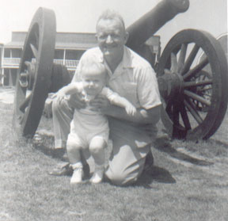

| James Obert Wogsland was born in the hot summer of 1956 to Neal and Mary Dell Wogsland, receiving his unusual middle name from his paternal grandfather. Their home was in Bel Air,Maryland just north of Baltimore. He grew up there playing with his two sisters, Nancy and Dell, and the boys nextdoor (who were also Jim's cousins). |

|
|
|
Neal was an engineer, and his son Jim demonstrated an early gift for science. Jim, however, also played in the band and excelled at history. He was truly a nerd par excellence. |
| Jim was educated at Western Maryland College (which has sadly since then seen it's name changed to McDaniel College), graduating in 1978 with a BA in Political Science. There he met his true love Sally Marshall, whom he soon married. The couple soon had a son, Bradley. After completing his MBA at Loyola, Jim settled down to work for AIG, in a division called the American International Adjustment Company (AIAC). In that time they had another son, Patrick, and a daughter, Jaime. As Jim moved up the corporate ladder during the eighties he moved his family to Pennsylvania, then California, and finally Georgia. It was there that he decided to make a permanent home for the family. In the late ninties AIAC changed its name and become AIG Claims Servies (AIGCS). |
|
|
Alora, Brittan and Jim in Yellowstone in 2000. |
1997 Jim saw his son Bradley leave home to start a family, and Jim became a grandfather. Then in 1999 Packie also went off to college. However, in 2002 Bradley and his family moved back home into the basement just before Jaime went off to college. In 2003 Jim moved from AIGCS, the division of AIG where he had worked up to that point, to AIRecovery (also a subsidiary of AIG) to become COO. Jim liked having the family close and was saddened in 2004 when Bradley moved his family to Tennessee and Jaime moved to Virginia. Jim and Sally also have two dogs, Lucy and Maggie, who became their babies. |